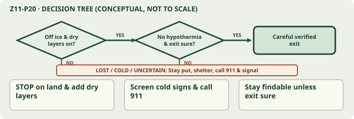

Z11-P20 · Navigation, weather and rescue · Adapted historical material
Execute the lost-in-winter pocket action sequence cleanly
Follow one clear, cold-stress-proof decision order when disoriented in winter conditions.
When it applies · Lost, overdue or weather-trapped outdoor party in cold or snowy conditions.
Equipment · Dry layers, ground insulation, whistle, light, map and phone/beacon if carried.

Actions
- STOP immediately on stable dry land away from ice, wind corridors and overhead snags—sit on pack or foam pad, put on dry insulation and eat/drink safe reserves to protect clear judgment.[T06, E05, E12, E13]
- THINK and OBSERVE: count the group, screen for early hypothermia (fumbling, slurred speech, confusion), check last confirmed landmark and test whether 911/text/beacon works without risky wandering.[T03, T06, N09, E11]
- PLAN conservatively: stay put, build a windbreak/dry bed and display high-contrast signals unless an unmistakable, short, verified land route leads to immediate safe shelter.[N09, E05, T06]
Failure recognition · Panicking and power-walking rapidly in freezing wind to stay warm, sweating out inner layers while moving farther away from the Point Last Seen.[E10, N09, T06]
Verify · Confirm the group is off ice, out of wind, wearing dry insulation, accounted for and either contacting rescue or displaying clear signals.[E05, E12, N09, ED]
Stop or change course · Worsening confusion, slurred speech, frostbite numbness or failing daylight ends all travel options—stabilize in shelter and activate emergency rescue immediately.[T03, T04, T02]
Evidence and editorial notes
- E05 · NWS · What To Do If You're Caught in a Winter Storm (current web edition)
- Section: Outside and find shelter · Conditions: Cold, wet or windy winter conditions
Support: Block wind, stay dry and keep off cold ground. Keep exposure reduction separate from making a fire.
Limitations: Improvised windbreaks do not provide rated thermal protection or snow-load capacity. · Conflicting evidence: None; aligns with CDC-H.
Editorial note: Separates wind, ground, and moisture heat-loss pathways. · Specialist reviewer: Cold-weather shelter specialist
Primary source · checked 2026-11-24 - E10 · NWS · What To Do If You're Caught in a Winter Storm (current web edition)
- Section: Outside > Protect yourself from frostbite and hypothermia · Conditions: Outdoor winter storm
Support: Keep clothing dry and avoid overexertion. Wetness accelerates cooling.
Limitations: Cotton retains moisture and accelerates conductive and evaporative heat loss. · Conflicting evidence: None; reinforces moisture-management layering.
Editorial note: Links sweat management to overnight insulation integrity. · Specialist reviewer: Cold-weather shelter and wilderness medicine
Primary source · checked 2026-11-24 - E11 · NPS · Hike Smart (current web edition)
- Section: Plan your hike; Stay together · Conditions: Groups on hiking routes
Support: Choose a route suited to the group's abilities and hike at a pace that keeps the group together.
Limitations: Fast hikers moving ahead at junctions is a leading driver of preventable separation. · Conflicting evidence: None; aligns with SAR prevention principles.
Editorial note: Core reference for group accountability and pacing cards. · Specialist reviewer: Group leaders and search and rescue
Primary source · checked 2026-11-24 - E12 · Minnesota DNR · Ice Safety (current web edition)
- Section: Ice Safety > basic precautions · Conditions: Minnesota ice edges and travel routes
Support: No ice is universally safe. Strength can differ over short distances; appearance or tracks alone cannot establish a safe crossing.
Limitations: Currents, springs, snow insulation, and freeze-thaw cycles weaken ice invisibly. · Conflicting evidence: None; mandates shore-bound detour for foundational walking parties.
Editorial note: Maintains strict separation from specialized B013 ice chapters. · Specialist reviewer: Ice safety and search and rescue
Primary source · checked 2026-11-24 - E13 · USDA Forest Service · Hazard Tree Safety (agency PDF)
- Section: What You Can Do to Reduce Risk · Conditions: Forest campsites and stops
Support: Look for dead trees and falling material. Stay away from hazardous trees and move away when winds make the site unsafe.
Limitations: Internal decay and root rot can cause live-looking trees to fail in saturated soils or high wind. · Conflicting evidence: Does not specify a universal exclusion radius; tree height and slope govern fall reach.
Editorial note: Prevents false precision on fall-zone distance while requiring overhead screening. · Specialist reviewer: Land management and arboriculture safety
Primary source · checked 2026-11-24 - N09 · NPS · Outdoor Emergency Plan (current web edition)
- Section: Outdoor Emergency Plan > Signaling, Lost-Person Protocol and SAR Handoff · Conditions: Lost or overdue party awaiting search and rescue
Support: Stay put once lost unless immediate danger requires moving to nearby safer ground; preserve footprints/clues, make visible contrast signals in open clearings, answer whistle/voice calls and stay ready for responder instructions.
Limitations: Unplanned wandering expands search radius exponentially and delays rescue contact. · Conflicting evidence: None; reinforces B014-P16, P17 and P20.
Editorial note: Core evidence for lost-person psychology, signaling and SAR coordination cards. · Specialist reviewer: Search and rescue
Primary source · checked 2026-11-24 - T02 · American Red Cross · First Aid Steps (current web edition)
- Section: First Aid Steps > Call 9-1-1 · Conditions: Lay emergency response to unresponsiveness, abnormal breathing or severe bleeding
Support: Activate EMS and get needed equipment. Follow dispatcher directions and act within training.
Limitations: Remote locations may delay EMS arrival, requiring sustained stabilization after activation. · Conflicting evidence: None; aligns with NPS-E.
Editorial note: Mandates early emergency activation and dispatcher adherence. · Specialist reviewer: EMS and wilderness medicine
Primary source · checked 2026-11-24 - T03 · CDC · Preventing Hypothermia (current web edition)
- Section: Warning signs; What to do · Conditions: Cold exposure and suspected hypothermia
Support: Confusion, slurred speech and drowsiness are warning signs. Obtain medical attention and protect from further cold.
Limitations: Shivering may stop as hypothermia worsens; absence of shivering is not reassurance. · Conflicting evidence: None; aligns with WMS cold guidelines.
Editorial note: Core neurological red-flag trigger for stopping activity and calling rescue. · Specialist reviewer: Wilderness medicine
Primary source · checked 2026-11-24 - T04 · Wilderness Medical Society · Frostbite clinical practice guideline 2024 update (2024)
- Section: Field treatment scenarios and Table 1 · Conditions: Suspected frostbite outside immediate medical care
Support: Avoid refreezing. Whether to actively thaw depends on ability to keep tissue thawed and evacuate. Detailed treatment requires clinical review.
Limitations: Field assessment cannot reliably determine final tissue depth. · Conflicting evidence: Supersedes outdated rubbing or snow-pack thawing myths.
Editorial note: Retained for cross-zone cold-injury stop boundaries. · Specialist reviewer: Wilderness medicine
Primary source · checked 2026-11-24 - T06 · NPS · Outdoor Emergency Plan (current web edition)
- Section: If you get lost or hurt; call for help · Conditions: Outdoor US emergency
Support: Communicate location, last known point, situation and needs. Stay put when unable to establish a safe route unless immediate danger requires movement.
Limitations: Cell signal is unreliable in backcountry terrain; pre-trip plans bridge communication gaps. · Conflicting evidence: None; core lost-person decision rule.
Editorial note: Foundation for stay/signal/move and dispatch handoff cards. · Specialist reviewer: Search and rescue
Primary source · checked 2026-11-24
Source lineage · B014-P20 pocket card and NWS winter safety; adapted historical material · Classification · Adapted historical material.